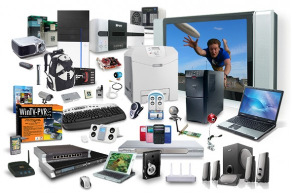

Servicios
Si tiene una empresa o negocio puede tener con nosotros su propio departamento de informática, pero a mucho menos coste. Damos servicios informáticos a empresas de Sevilla y provincia.
En nuestro día a día nos encontramos con dos formas habituales de trabajar. Por un lado está la empresa que nos requiere para trabajos concretos y que nos llama puntualmente como si se tratara de un domicilio particular, por otro están los clientes que prefieren tener un contrato de mantenimiento pagando una cuota fija mensual por nuestros servicios.
Servicios que ofrecemos

Mantenimiento de equipos informáticos

Creación de páginas web

Creación y gestión de redes

Gestión de la seguridad informática